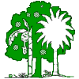

|  |
|
||
New Breadfruit Trees Planted in Jamaica
December, 2009. Trees That Feed Foundation ("TTFF") was pleased to introduce a new variety of breadfruit tree to Jamaica. TTFF, worked in collaboration with The Jamaican Rural Agricultural Development Agency (RADA), the
Breadfruit Institute at the National Tropical Botanical Garden (NTBG), Hawaii and Cultivaris, a San Diego, CA nursery firm that has been selected by NTBG to apply the newly discovered cloning of breadfruit to provide large volumes of plants. We believe that this is the first new variety of breadfruit introduced to Jamaica since Captain Bligh in 1793.
 The Ma'afala variety, native to Samoa, is highly valued as a food and export crop. This first batch of trees was planted at Orange River Research Station in Jamaica, so that scientists can study their local adaptability and productivity. If this variety behaves as in its native Samoa it is expected to bear fruit at a different season than the five varieties currently in Jamaica, and is a much shorter tree, making it less vulnerable to hurricanes and more adaptable to orchard growing. The trees are intended for the local and export fresh fruit markets, for manufacture of gluten-free flour and for making of breadfruit chips. Among the first beneficiaries of subsequent shipments of Ma’afala is a project co-sponsored by TTFF, Rotary and PACE, a Canadian aid organization. This project will provide plants for Basic schools in Jamaica as a part of a nutrition program.
The Ma'afala variety, native to Samoa, is highly valued as a food and export crop. This first batch of trees was planted at Orange River Research Station in Jamaica, so that scientists can study their local adaptability and productivity. If this variety behaves as in its native Samoa it is expected to bear fruit at a different season than the five varieties currently in Jamaica, and is a much shorter tree, making it less vulnerable to hurricanes and more adaptable to orchard growing. The trees are intended for the local and export fresh fruit markets, for manufacture of gluten-free flour and for making of breadfruit chips. Among the first beneficiaries of subsequent shipments of Ma’afala is a project co-sponsored by TTFF, Rotary and PACE, a Canadian aid organization. This project will provide plants for Basic schools in Jamaica as a part of a nutrition program.
 The Ma'afala variety, native to Samoa, is highly valued as a food and export crop. This first batch of trees was planted at Orange River Research Station in Jamaica, so that scientists can study their local adaptability and productivity. If this variety behaves as in its native Samoa it is expected to bear fruit at a different season than the five varieties currently in Jamaica, and is a much shorter tree, making it less vulnerable to hurricanes and more adaptable to orchard growing. The trees are intended for the local and export fresh fruit markets, for manufacture of gluten-free flour and for making of breadfruit chips. Among the first beneficiaries of subsequent shipments of Ma’afala is a project co-sponsored by TTFF, Rotary and PACE, a Canadian aid organization. This project will provide plants for Basic schools in Jamaica as a part of a nutrition program.
The Ma'afala variety, native to Samoa, is highly valued as a food and export crop. This first batch of trees was planted at Orange River Research Station in Jamaica, so that scientists can study their local adaptability and productivity. If this variety behaves as in its native Samoa it is expected to bear fruit at a different season than the five varieties currently in Jamaica, and is a much shorter tree, making it less vulnerable to hurricanes and more adaptable to orchard growing. The trees are intended for the local and export fresh fruit markets, for manufacture of gluten-free flour and for making of breadfruit chips. Among the first beneficiaries of subsequent shipments of Ma’afala is a project co-sponsored by TTFF, Rotary and PACE, a Canadian aid organization. This project will provide plants for Basic schools in Jamaica as a part of a nutrition program.
The economics appear strong. The trees bear fruit after only 3 years and live 70 years or more. Based on cost and estimated production, payback will be rapid and the return on investment should be high. Donations to TTFF will have a high impact on the local economy.
It was an exciting time for us as we saw these new trees being planted. We had help from Jamaican agricultural experts who understood the potential value for the local economy.
Especially to Mr. Zavier Gray who takes photos of the plants and email them to us regularly from his cell phone. Also thanks to Mr. Joseph Johnson, Mr. Keith Thomas, Mr. Adrian Burk, Mr. Seymour Webster, Mrs. Lenria Harris, Mr. Keith Thomas and Dr. Vincent Wright of Northern Caribbean University.
Trees That Feed Foundation hopes to expand the program in 2010.
The photo of the young Breadfruit Ma'afala plants shows our plans for 250 of these plants that are to be shipped to Jamaica in August 2010. Some of these will be planted in Basic schools. Our partners in the project are: PACE Canada, the Rotary Clubs of Jamaica.Our contacts are Oliver Green Director for The Rotary Club of Ocho Rios 2010 and Mrs.Cathy Henry, Public Relations Director for The Rotary Club of St. Catharines, South Ontario, Canada and member of PACE Canada, 2010 To read more about PACE Canada and what they do for education in Jamaica visit www.pacecanada.org.
The photo of the young Breadfruit Ma'afala plants shows our plans for 250 of these plants that are to be shipped to Jamaica in August 2010. Some of these will be planted in Basic schools. Our partners in the project are: PACE Canada, the Rotary Clubs of Jamaica.Our contacts are Oliver Green Director for The Rotary Club of Ocho Rios 2010 and Mrs.Cathy Henry, Public Relations Director for The Rotary Club of St. Catharines, South Ontario, Canada and member of PACE Canada, 2010 To read more about PACE Canada and what they do for education in Jamaica visit www.pacecanada.org.
To make an electronic donation via PayPal please click the donate button:
©2010 Trees That Feed Foundation,
1200 Hill Road, Winnetka, Illinois 60093
A 501(c)(3) not-for-profit organization. Donations are fully tax-deductible to the extent allowable by law.
A 501(c)(3) not-for-profit organization. Donations are fully tax-deductible to the extent allowable by law.